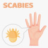

Scabies
Rx
1.Shampoo Permethrin (1%) N=1
Or Solution Malathion 0.5% N=1
+ Tab Co-Trimoxazole 480mg N=12 q12h for3day
Or Cream Permethrin 1% N=1
2.Tab Hydroxyzine N=30 q6h
نکته: شامپو پرمترین بعد از استحمام به مدت ۱۰ دقیقه روی سر بماند و سپس شسته شود. و تکرار7 روز بعد. (در بارداری هم گروهB قرار دارد)
نکته: محلول مالاتیون روی موهای خشک به مدت 8-12 ساعت بماند وسپس شسته شود. و تکرار 1 هفته بعد
نکته: لیندان منسوخ شده است.
نکته: برای شپش بدن تمام کرم پرمترین در تمام سطح بدن حتی زیر ناخن مالیده شود 8-12 ساعت بماند و یک هفته بعد تکرار شود.
نکته: تمام افراد خانواده درمان شوند.
نکته: درصورت موارد شدید از کوتریموکسازول به مدت 3روز وتکرار یک هفته بعد
نکته: به مدت 2 هفته با آب و سرکه موها را شانه کند.
نکته: شستن لباس و ملحفه ها با آب داغ و موارد غیرقابل شستشو در پلاستیک سربسته به مدت یک هفته
1️⃣ واکنش دارویی
2️⃣ بولوس پمفیگویید
3️⃣ درماتیت ، اگزما و Id reaction
4️⃣ فولیکولیت
5️⃣ گزش حشره
6️⃣ لیکن پلان
7️⃣ کهیر
8️⃣ پسوریازیس
9️⃣ ایکتیوز
🔟 Prurigo nodularis
1️⃣1️⃣ آبله مرغان
1️⃣2️⃣ سیفلیس